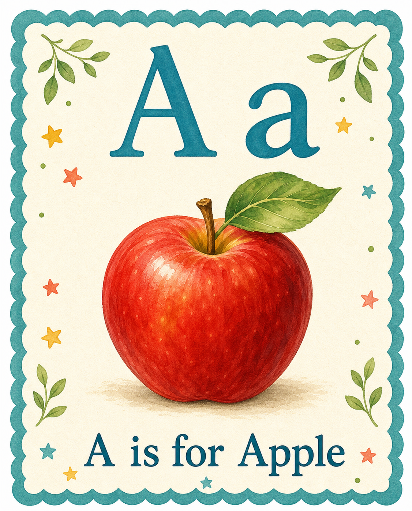
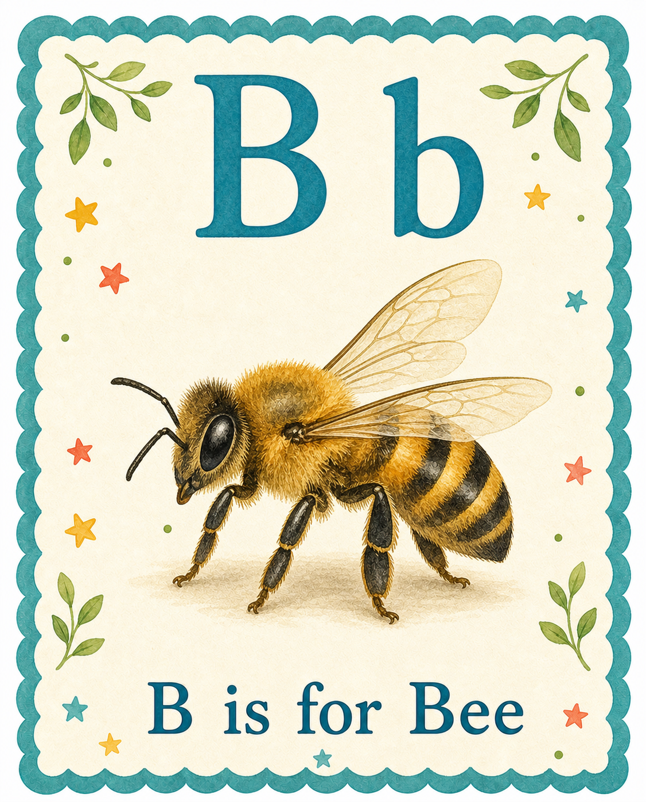

DESIGN PREVIEW — labels and blank values demonstrate the layout; this page is not live substrate evidence
Live evidence goes here
—awake / asleep / dreaming
—time and causal receipt
—observed or quiet
—physical expression only
Guala’s current visual boundary
Camera off · no invented view
No visual signal at this moment The room remains available; no false image is substituted.

PHYSICAL SURFACE 01

PHYSICAL SURFACE 02
Future approved room objects appear here
—current authenticated learned structures—current authenticated related structures—current authenticated expressive structures
Exact evidence · Full DSF fields, receipts, persistence, and component detail remain available in one collapsed technical drawer instead of dominating the human view.